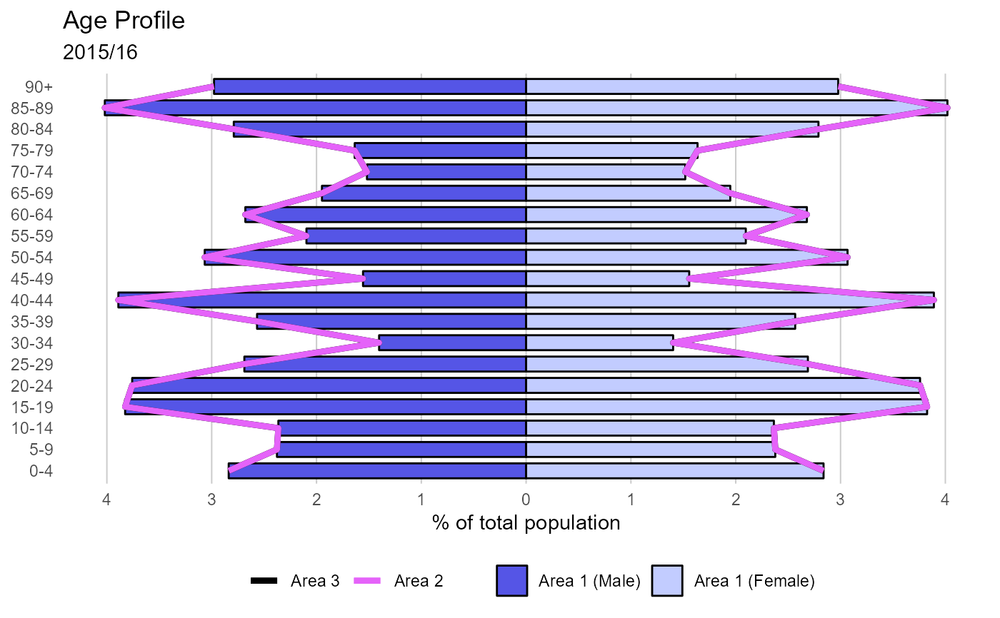

Plot population pyramid
population( data, value, sex, age, area, area_name, comparator_1, comparator_2, title, subtitle, xlab )
| data | data.frame object to plot using ggplot2 functions |
|---|---|
| value | field containing variable to be plotted on x axis (unquoted) |
| sex | field containing sex variable (unquoted) |
| age | field containing age variable (unquoted) |
| area | field containing variable to be plotted on y axis (unquoted) |
| area_name | string; name of the local area (this should exist in the field described by the area parameter) |
| comparator_1 | string; name of comparator area (this should exist in the field described by the area parameter) |
| comparator_2 | string; name of comparator area (this should exist in the field described by the area parameter) |
| title | string; title of chart |
| subtitle | string; text to use as subtitle to graph |
| xlab | string; x-axis title |
a ggplot of a population pyramid against 2 optional comparators
Other quick charts:
box_plots(),
compare_areas(),
compare_indicators(),
map(),
overview(),
trends()
library(dplyr) agelevels <- c("0-4", "5-9","10-14","15-19", "20-24","25-29","30-34", "35-39","40-44","45-49", "50-54","55-59","60-64", "65-69","70-74","75-79", "80-84","85-89","90+") areas <- c("Area 1", "Area 2", "Area 3") pops <- data.frame(Age = factor(rep(agelevels, length(areas) * 2), levels = agelevels), Value = rep(sample(1000:3000, length(agelevels), replace = TRUE), length(areas) * 2), Sex = rep(rep(c("Male", "Female"), each = length(agelevels)), length(areas)), AreaName = rep(areas, each = length(agelevels) * 2)) p <- population(pops, value = Value, sex = Sex, age = Age, area = AreaName, area_name = "Area 1", comparator_1 = "Area 3", comparator_2 = "Area 2", title = "Age Profile", subtitle = "2015/16", xlab = "% of total population") p